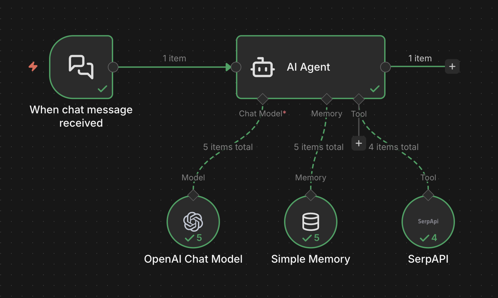
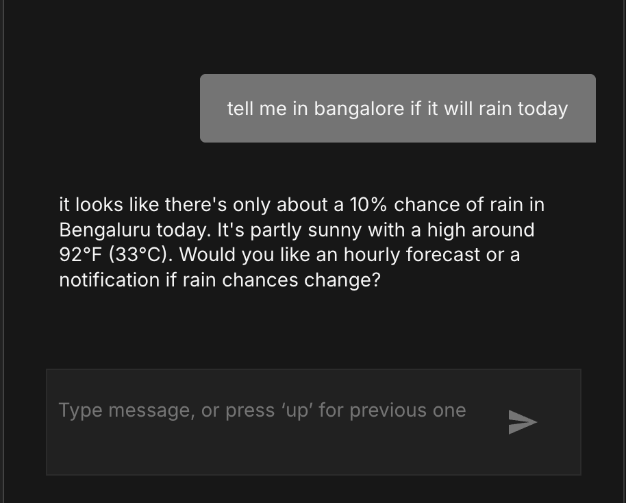
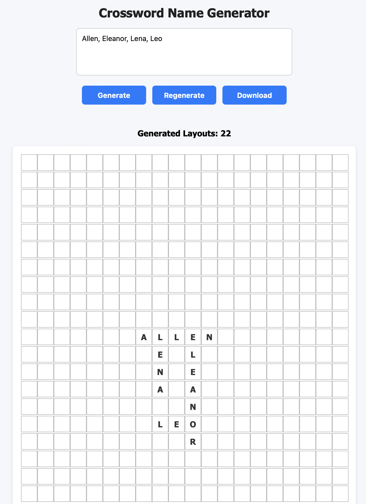

I'm a passionate software engineer with a strong programming foundation and a focus on building scalable, reliable systems. I enjoy solving real-world problems and creating impactful, clean, and thoughtful solutions.
Live-Search AI Chat Agent —


Orchestration: n8n
LLM Engine: OpenAI GPT-4o / GPT-3.5
Research Tool: SerpAPI (Google Search)
State Management: Simple Window Memory
Framework/Concepts: ReAct + LangChain-style Agent/Tool/Memory patterns
This project features a low-code automation workflow designed to handle real-time user inquiries by leveraging an Autonomous AI Agent. Unlike a standard LLM restricted by knowledge cutoffs, this agent is equipped with "senses" - specifically a search tool - allowing it to fetch live information (weather, news, technical docs) while maintaining a coherent dialogue through persistent memory.
Trigger: A Chat node listens for incoming messages from a user interface.
The Brain (Reasoning): Powered by OpenAI (GPT-4o/3.5), the agent node acts as a central controller.
It decides whether to answer immediately or dispatch a tool for more data.
Augmentation (Research & Context):
SerpAPI: Enables real-time Google Search integration to ground answers in current facts.
Simple Window Memory: Ensures context persistence, allowing for multi-turn conversations and follow-up questions.
Output: A synthesized, researched response delivered back to the user.
Orchestration: n8n (Workflow Engineering)
Logic Model: ReAct (Reasoning + Acting) framework.
Tool Dispatching: Configured the agent to handle unstructured queries by determining tool necessity on-the-fly.
API Management: Managed API credit usage and response parsing to ensure high-speed, cost-effective data retrieval.
LangChain Concepts: Implemented Agent/Tool/Memory patterns within a visual automation ecosystem.
Live Data Retrieval: Fetching real-time updates like weather in Bengaluru or stock fluctuations.
Technical Support: Bridging user queries with live documentation or Stack Overflow via automated search.
Personal Research: Summarizing complex search results into concise, actionable chat responses.
Family Crossword Game — Play | Source Code
Create multiple crossword-style layouts from family names with navigation and export options.